最近anthropic搞活动，claude pro用户送250刀的https://claude.ai/code额度，然后这个工具会跟你的github连接，这意味着你就可以直接在网页上进行项目开发了。
我想起了很久前，我利用github page搞个人博客，但是每次都是不了了之，不再更新，因为需要在本地编辑页面，然后推送到github上，github利用action进行编译生成最后的静态文件，这实在是不如直接用Halo这类带后台的工具编辑方便。不过现在AI网站都在推网页项目开发，这个github page就又可以继续利用起来了。
首先，你得能访问到github，这样你才能注册一个github账号，点击右上角的+号，新建一个账号同名账户，比如说我的账号是xuzhougeng，那么我填写xuzhougeng，这里就会有一个特殊的提醒，告诉你这个仓库是特殊的。
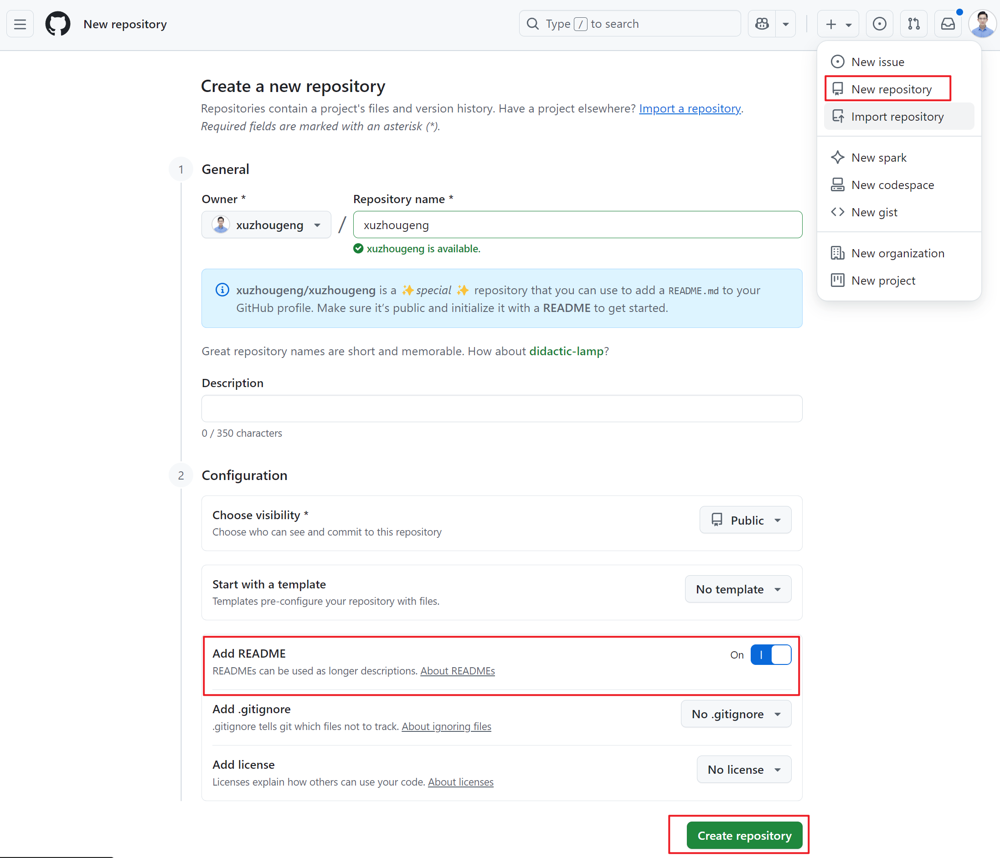打开我们的用户名同名的仓库，我的是 github.com/xuzhougeng/xuzhougeng ,可以看到我们位于main的分支下。
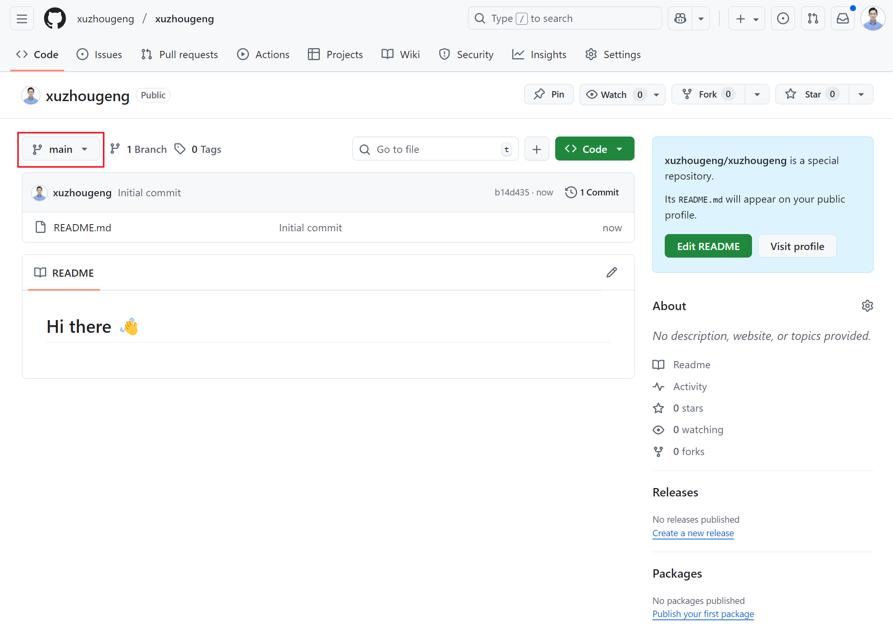打开Settings，选择其中Pages，默认下我们就是Deploy from a brach，然后我们在Branch选择main进行保存，这个时候，github会使用我们刚才main分支下的index.html文件作为网页。
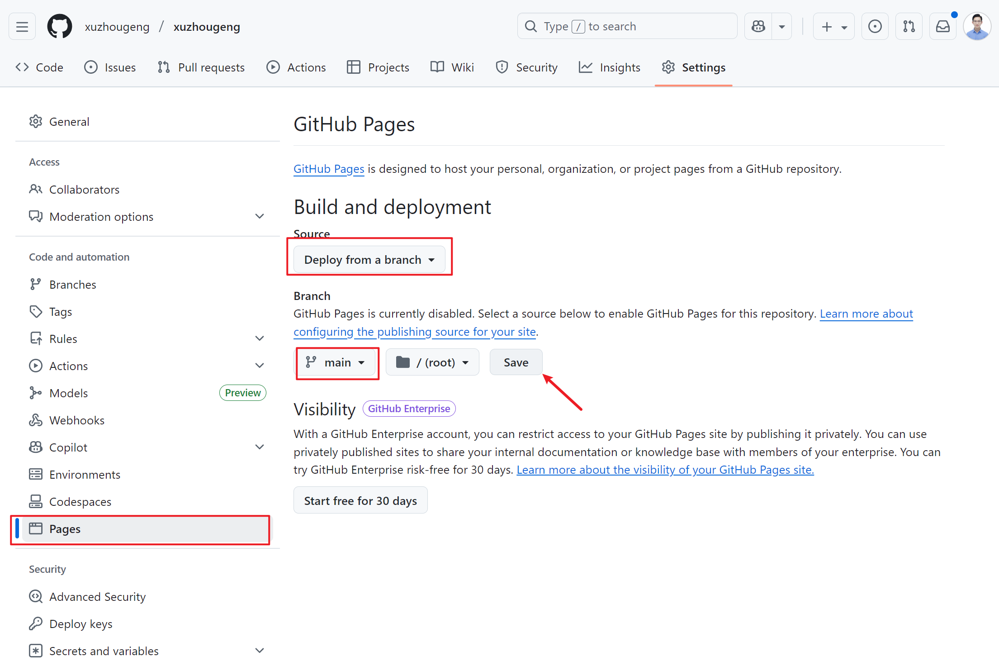默认github使用 用户名.github.io 作为这个域名用于访问这个github page，但是如果你买了域名，可以设置Custom domain，作为这一步之后，他会在你的main新增一个CNAME文件。
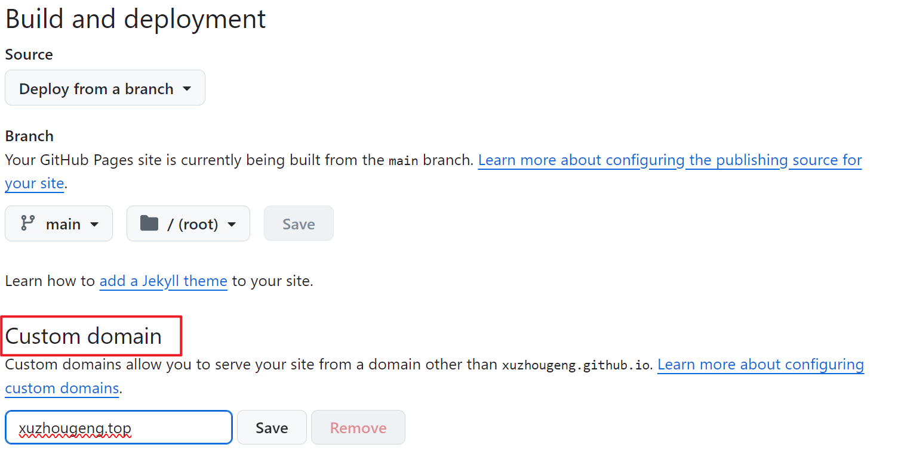同时你也需要你的DNS域名服务商中设置解析。这是我在万网的配置方法。
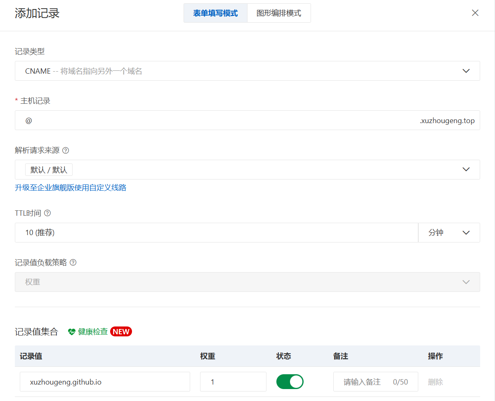然后，我们就可以到cladue code web里面搞开发了。第一次使用的时候，会提示你需要在github中安装一个Claude GitHub app.
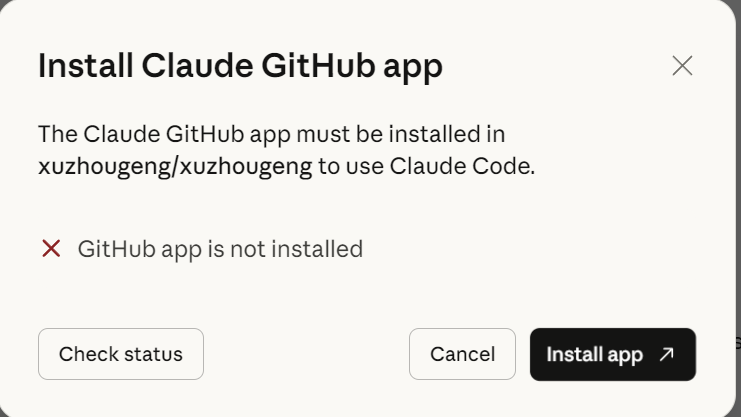你可以授权所有的仓库，也可以像我一样，只选择了xuzhougeng
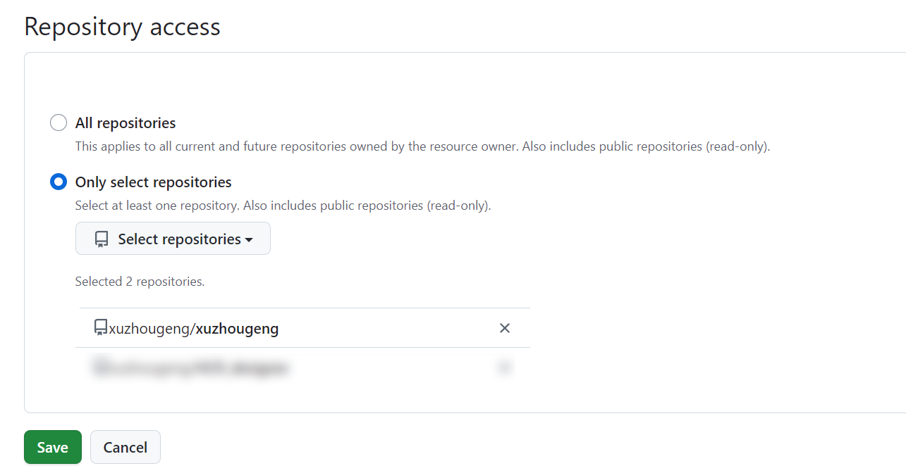最后你输入提示语，就行了，比如说我们写一个hello world!
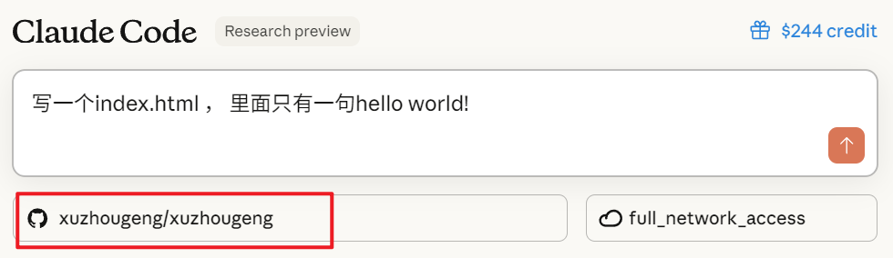他就会启动任务，然后提交一个PR,
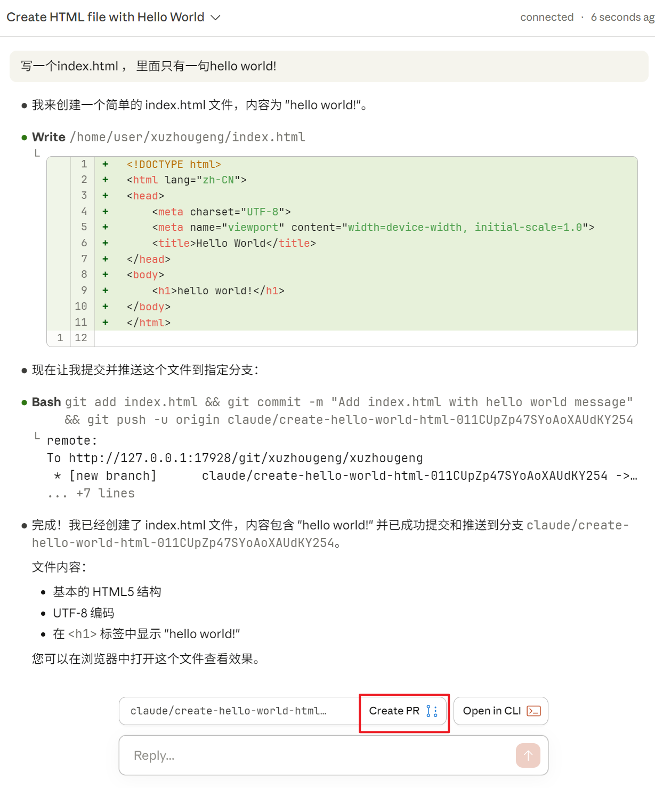跳转到github的pulls页面下，我们只需要点击Create Pull request
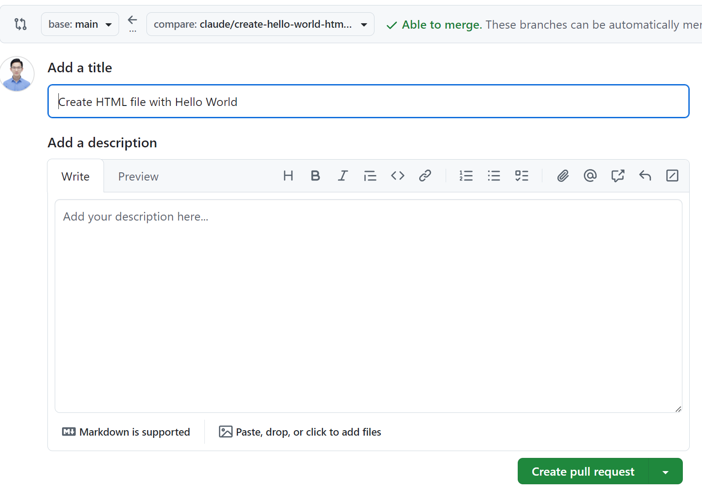点击merge pull request，就可以将Claude生成的代码跟我们的主分支main进行合并。等待一会后就可以在你的github page上看到hello world.
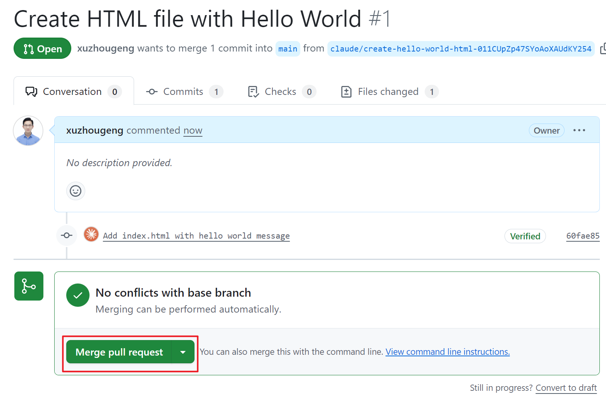当然了， 我们还可以写一个经典的网页版贪吃蛇游戏。
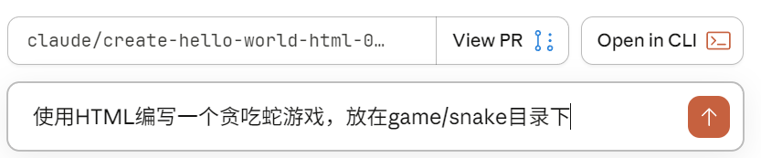等待他完成后，我们继续点view PR
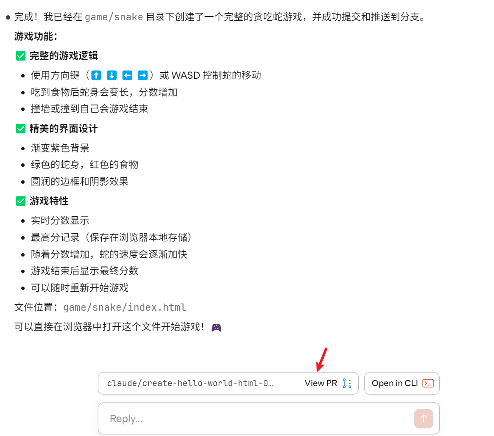这一次不一样的是，我们无法直接看到提交PR的页面。但是没有关系，我们可以在pulls页面中，选择Compare & pull request
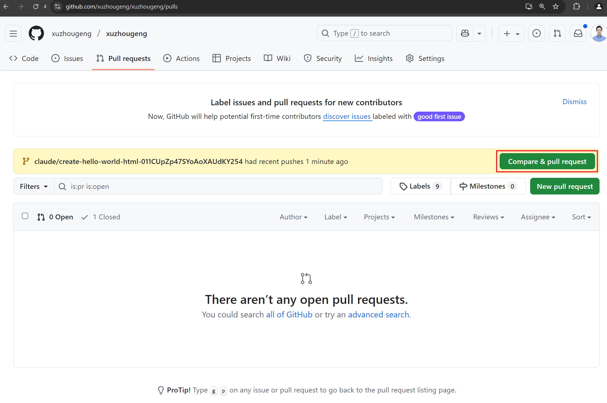可以看到我们改动的代码，重复刚才的操作即可。
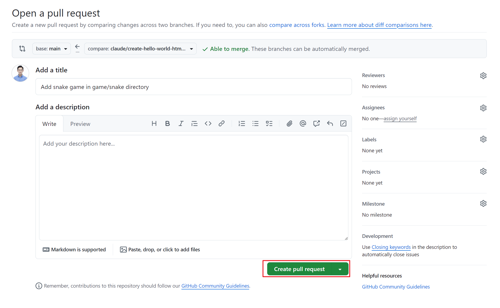 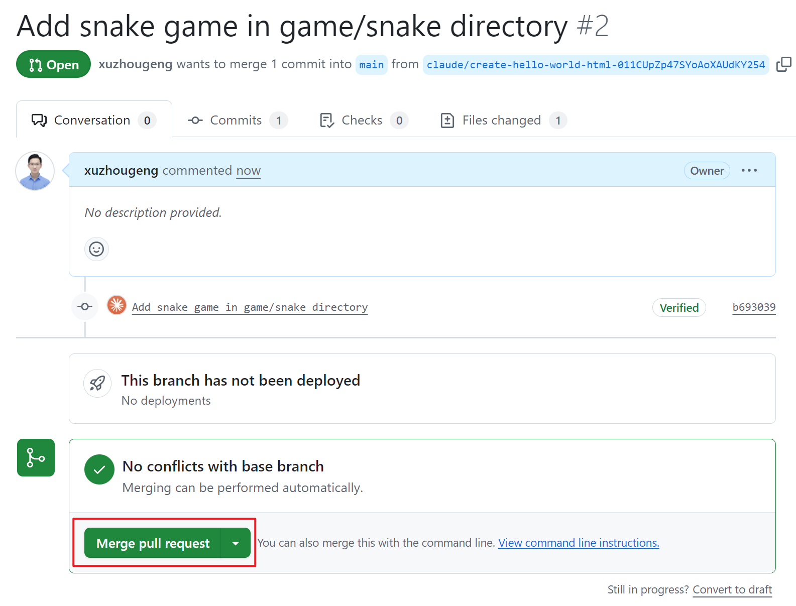 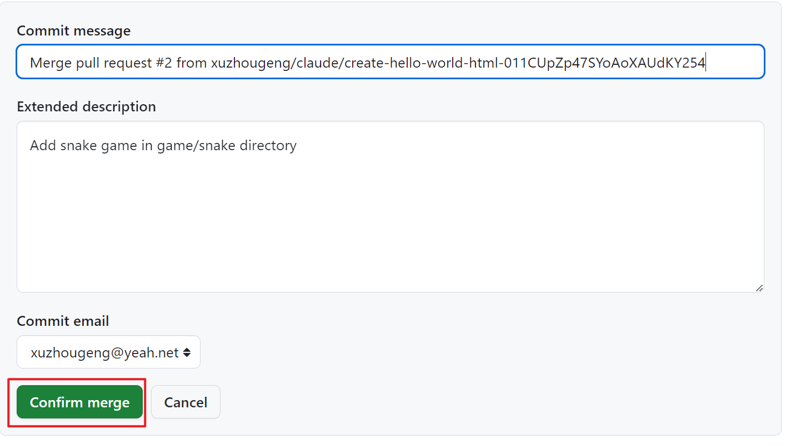